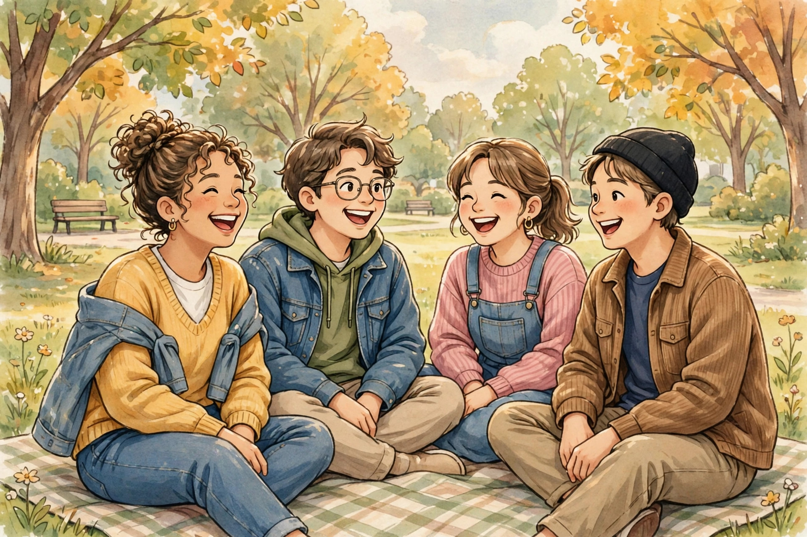

Friends Portrait Prompts: 10 Fun Ideas for 2026


The best photos of friends are rarely the planned ones. They are the ones where someone is mid laugh, or the whole group is squashed onto one sofa. That is the feeling these prompts are built around.
Start with a photo where you can see each friend clearly. A group selfie or a shot from a day out works well. If someone is half hidden behind someone else, the tool will struggle with that face, so pick a clear one.
Each prompt below drops your group into a simple scene. A park, a cafe, a road trip, a beach at sunset. The scenes are plain on purpose, so the friendship stays the centre of the picture.
You do not need a studio or fancy gear for any of this. One good photo, one prompt, and a couple of minutes. If the first result is close but not quite right, run it again before you change anything.
Before you start
Group photos are harder for AI tools than single portraits, so these five points matter more here. Read them once before you start.
- Pick a photo where every friend is visible and facing the camera. A face turned away or cut off at the edge will come back wrong.
- Upload one clear photo per person when the tool asks for it. It takes a moment longer, and the faces come out far better.
- Choose a starting photo with a simple background. A busy street or a crowded room makes the tool work harder than it needs to.
- Copy the prompt as it is on the first try. If you rewrite half of it and the result is odd, you will not know which part caused it.
- Keep the best result, then run the same prompt once more. Friends photos often improve on the second try, when the light settles.
Table of contents
- Prompt 1: Laughing in a park
- Prompt 2: At a cafe together
- Prompt 3: On a road trip
- Prompt 4: At the beach, sunset
- Prompt 5: Cooking together
- Prompt 6: In matching outfits
- Prompt 7: Watching a film at home
- Prompt 8: Playing games, laughing
- Prompt 9: Hiking together
- Prompt 10: At a party, all smiling
- How to use these prompts
- Tips to get a better result
- Common mistakes to avoid
- Frequently asked questions
10 copy and paste prompts
Find the scene that sounds most like your group, copy the prompt, and paste it with your photos.
1. Laughing in a park
Create a realistic, natural photo from my uploaded photo. Keep the face exactly the same as in the uploaded photo, with the same eyes, smile, hair and skin tone. Do not change the person into someone else, and do not make the skin look smooth or plastic. Show you and your friends laughing in a park, in casual outfits, with soft daylight. Keep the pose relaxed and natural, with a real expression, not a stiff studio pose. Use soft, natural light that suits the scene, with clear detail in the face, hair and clothes. Keep the background simple so the person stays the main focus. Shoot it in a vertical 3 to 4 frame, as if taken on a 35mm lens with a shallow depth of field. The final photo should look like a real photo taken on a good day, with true colours, gentle shadows and a calm, honest feel. It should work well for a profile photo, a print, or a post with family and friends.
Laughter is hard to fake, so this prompt leans on a natural moment. A park, soft light, everyone relaxed. It reads like a real afternoon, not a posed group shot.
2. At a cafe together
Create a realistic, natural photo from my uploaded photo. Keep the face exactly the same as in the uploaded photo, with the same eyes, smile, hair and skin tone. Do not change the person into someone else, and do not make the skin look smooth or plastic. Show you and your friends at a cafe, with coffee cups, smiling, with warm light. Keep the pose relaxed and natural, with a real expression, not a stiff studio pose. Use soft, natural light that suits the scene, with clear detail in the face, hair and clothes. Keep the background simple so the person stays the main focus. Shoot it in a vertical 3 to 4 frame, as if taken on a 50mm lens with a shallow depth of field. The final photo should look like a real photo taken on a good day, with true colours, gentle shadows and a calm, honest feel. It should work well for a profile photo, a print, or a post with family and friends.
A cafe gives the group something to do with their hands. Cups on the table, chairs pulled close. That small detail keeps the photo from feeling staged.
3. On a road trip
Create a realistic, natural photo from my uploaded photo. Keep the face exactly the same as in the uploaded photo, with the same eyes, smile, hair and skin tone. Do not change the person into someone else, and do not make the skin look smooth or plastic. Show you and your friends on a road trip, by a car, smiling, with a wide sky. Keep the pose relaxed and natural, with a real expression, not a stiff studio pose. Use soft, natural light that suits the scene, with clear detail in the face, hair and clothes. Keep the background simple so the person stays the main focus. Shoot it in a vertical 3 to 4 frame, as if taken on a 85mm portrait lens with a shallow depth of field. The final photo should look like a real photo taken on a good day, with true colours, gentle shadows and a calm, honest feel. It should work well for a profile photo, a print, or a post with family and friends.
A road trip scene works because the mood is already in it. Windows down, bags packed, everyone looking forward. The prompt just frames what friends already feel.
4. At the beach, sunset
Create a realistic, natural photo from my uploaded photo. Keep the face exactly the same as in the uploaded photo, with the same eyes, smile, hair and skin tone. Do not change the person into someone else, and do not make the skin look smooth or plastic. Show you and your friends at the beach at sunset, laughing, with warm light. Keep the pose relaxed and natural, with a real expression, not a stiff studio pose. Use soft, natural light that suits the scene, with clear detail in the face, hair and clothes. Keep the background simple so the person stays the main focus. Shoot it in a vertical 3 to 4 frame, as if taken on a 35mm lens with a shallow depth of field. The final photo should look like a real photo taken on a good day, with true colours, gentle shadows and a calm, honest feel. It should work well for a profile photo, a print, or a post with family and friends.
Sunset at the beach flatters everyone at once. Warm light, soft waves, no harsh shadows. It is a forgiving setting for a group photo.
5. Cooking together
Create a realistic, natural photo from my uploaded photo. Keep the face exactly the same as in the uploaded photo, with the same eyes, smile, hair and skin tone. Do not change the person into someone else, and do not make the skin look smooth or plastic. Show you and your friends cooking together in a kitchen, smiling, with fresh food. Keep the pose relaxed and natural, with a real expression, not a stiff studio pose. Use soft, natural light that suits the scene, with clear detail in the face, hair and clothes. Keep the background simple so the person stays the main focus. Shoot it in a vertical 3 to 4 frame, as if taken on a 50mm lens with a shallow depth of field. The final photo should look like a real photo taken on a good day, with true colours, gentle shadows and a calm, honest feel. It should work well for a profile photo, a print, or a post with family and friends.
Cooking together gives each person a place in the frame. Someone stirs, someone laughs. Those small jobs make the group look like a real group, not a line up.
6. In matching outfits
Create a realistic, natural photo from my uploaded photo. Keep the face exactly the same as in the uploaded photo, with the same eyes, smile, hair and skin tone. Do not change the person into someone else, and do not make the skin look smooth or plastic. Show you and your friends in matching outfits, standing in a row, smiling, with a plain background. Keep the pose relaxed and natural, with a real expression, not a stiff studio pose. Use soft, natural light that suits the scene, with clear detail in the face, hair and clothes. Keep the background simple so the person stays the main focus. Shoot it in a vertical 3 to 4 frame, as if taken on a 85mm portrait lens with a shallow depth of field. The final photo should look like a real photo taken on a good day, with true colours, gentle shadows and a calm, honest feel. It should work well for a profile photo, a print, or a post with family and friends.
Matching outfits tie a group photo together fast. The clothes do the unifying, so the faces and the laughs can do the rest.
7. Watching a film at home
Create a realistic, natural photo from my uploaded photo. Keep the face exactly the same as in the uploaded photo, with the same eyes, smile, hair and skin tone. Do not change the person into someone else, and do not make the skin look smooth or plastic. Show you and your friends watching a film at home, close together, with soft lamp light. Keep the pose relaxed and natural, with a real expression, not a stiff studio pose. Use soft, natural light that suits the scene, with clear detail in the face, hair and clothes. Keep the background simple so the person stays the main focus. Shoot it in a vertical 3 to 4 frame, as if taken on a 35mm lens with a shallow depth of field. The final photo should look like a real photo taken on a good day, with true colours, gentle shadows and a calm, honest feel. It should work well for a profile photo, a print, or a post with family and friends.
A film night at home is the easiest scene to believe. Sofa, blankets, everyone close. Low light and close seating hide small flaws and keep the mood warm.
8. Playing games, laughing
Create a realistic, natural photo from my uploaded photo. Keep the face exactly the same as in the uploaded photo, with the same eyes, smile, hair and skin tone. Do not change the person into someone else, and do not make the skin look smooth or plastic. Show you and your friends playing a board game, laughing, with warm indoor light. Keep the pose relaxed and natural, with a real expression, not a stiff studio pose. Use soft, natural light that suits the scene, with clear detail in the face, hair and clothes. Keep the background simple so the person stays the main focus. Shoot it in a vertical 3 to 4 frame, as if taken on a 50mm lens with a shallow depth of field. The final photo should look like a real photo taken on a good day, with true colours, gentle shadows and a calm, honest feel. It should work well for a profile photo, a print, or a post with family and friends.
Games bring out real expressions. Nobody has to hold a smile when they are laughing at a game, and that is why this one often looks the most natural.
9. Hiking together
Create a realistic, natural photo from my uploaded photo. Keep the face exactly the same as in the uploaded photo, with the same eyes, smile, hair and skin tone. Do not change the person into someone else, and do not make the skin look smooth or plastic. Show you and your friends hiking together, in casual clothes, with mountains behind you. Keep the pose relaxed and natural, with a real expression, not a stiff studio pose. Use soft, natural light that suits the scene, with clear detail in the face, hair and clothes. Keep the background simple so the person stays the main focus. Shoot it in a vertical 3 to 4 frame, as if taken on a 85mm portrait lens with a shallow depth of field. The final photo should look like a real photo taken on a good day, with true colours, gentle shadows and a calm, honest feel. It should work well for a profile photo, a print, or a post with family and friends.
Hiking gives the photo movement and fresh air. The trail and the trees stay simple behind you, so the group stays the focus even outdoors.
10. At a party, all smiling
Create a realistic, natural photo from my uploaded photo. Keep the face exactly the same as in the uploaded photo, with the same eyes, smile, hair and skin tone. Do not change the person into someone else, and do not make the skin look smooth or plastic. Show you and your friends at a small party, all smiling, with warm lights. Keep the pose relaxed and natural, with a real expression, not a stiff studio pose. Use soft, natural light that suits the scene, with clear detail in the face, hair and clothes. Keep the background simple so the person stays the main focus. Shoot it in a vertical 3 to 4 frame, as if taken on a 50mm lens with a shallow depth of field. The final photo should look like a real photo taken on a good day, with true colours, gentle shadows and a calm, honest feel. It should work well for a profile photo, a print, or a post with family and friends.
A party scene works when the smiles are the main event. Bright light, everyone together, no stiff posing. It makes a good picture to send in the group chat the same night.
How to use these prompts
Group photos are the hardest kind on this site, because every face has to stay true. Upload one clear photo per friend and you are most of the way there.
How to use a prompt in Google Gemini
- Open Gemini on your phone or computer.
- Upload one clear photo per friend. Every face should be in focus and facing the camera.
- Copy one prompt from this page and paste it under your photos.
- Send it, and wait for the result. Do not send the same prompt again while it is still working.
- Look at each face in turn, then the hands and the background. If one face is off, try the same prompt once more with a clearer photo of that person.
How to use a prompt in ChatGPT
- Open ChatGPT on your phone or computer.
- Upload one clear photo per friend in the chat.
- Copy one prompt from this page and paste it with your photos.
- Send it, and wait for the result.
- If the result is close but not quite right, ask for one small change, such as warmer light or a simpler background, and keep the rest of the prompt the same.
Both tools can give a different result from the same prompt. That is normal with group photos, because there are more faces to keep right. Try the same prompt in both tools if you have time, and keep the photo you like best.
Tips to get a better result
- Start with the clearest photos you have. Daylight photos, with every face in focus, give the best result.
- Keep the prompt simple on the first try. Long, complex prompts can confuse the tool and change a face.
- Change one thing at a time. If you want different light, change only the light.
- Use a vertical photo for a profile photo or a print. Most of the prompts on this page ask for a vertical 3 to 4 frame for that reason.
- Check hands, eyes and small details in the result. AI tools still make small errors there, and a second try often fixes them.
- Save the prompt that worked for you. If you use the same prompt again with new photos, the style will stay similar.
Common mistakes to avoid
- Do not use a group photo where someone is half hidden or turned away. That face will come back wrong.
- Do not upload a photo of another person without their permission. Only use photos you have the right to use.
- Do not copy a prompt and then change every line at once. You will not know what went wrong if the result is poor.
- Do not expect the same result every time. AI tools vary, even with the same prompt and the same photos.
- Do not use one crowded photo for the whole group and expect every face to stay true. One clear photo per person works far better.
Frequently asked questions
Can I use these prompts for free?
Yes, all 10 prompts on this page are free. Copy any of them, paste it with your photos into Gemini or ChatGPT, and use the result for your own posts and prints.
Which tool works best with these prompts?
Both are worth trying. Gemini often handles a reference photo well, and ChatGPT often follows a detailed prompt well. Run the same prompt in both and keep the better group photo.
Why does the face change in my photo?
Group photos are the hardest case. If one face is dark, blurry or turned away in the starting photo, the tool has to invent that face. Use a clear front photo of each friend, in good light.
Can I change the prompt for my own photo?
Yes. Change the outfits, the place or the light to match your group, but keep the line about keeping faces the same. One change at a time works better than rewriting the whole prompt.
Can I use the photo I make for a card or a post?
Yes, for your own personal use. Share it with your friends, post it on your own social media or print it. Do not use a photo of someone who has not agreed to it.
Related guides


See all Trending Prompts guides | Back to the home page
Written by Muhammad Afaq
Muhammad Afaq is a writer and AI prompt creator at Prompt Haven. He writes and tests the prompts on this site using Google Gemini and ChatGPT, with real photos, to check that each prompt is clear, simple, and easy to copy and paste.